编译原理-第一章-第三章
第一章 引论
课程内容： 介绍程序设计语言 编译程序构造 的 基本原理 和 基本实现技术 。
什么是编译程序
翻译程序(Translator)
把某一种语言程序（称为 源语言程序） 等价 的转换成另一种语言程序（称为 目标语言程序） 的程序。
编译程序(Complier)
把某一种 高级语言程序 等价的转化成另一种 低级语言程序 （如汇编语言或机器语言程序）的程序。
编译程序可分为： 诊断编译程序、优化编译程序、交叉编译程序、可变目标编译程序 。
解释程序(Interpretor)
把 源语言 写的源程序作为输入，但不产生目标 程序，而是 边解释边执行 源程序。
为什么学习编译原理
从计算机科学与技术可以学到什么：
- 理解计算系统
- 设计计算系统
- 训练计算思维(Computational Thinking)
计算思维是什么：
计算思维是运用计算集科学的基础概念去求解问题，设计系统和理解人类行为。
计算思维的广泛方法：
抽象、自动化、问题分解、递归、权衡、保护、冗余、容错、纠错、和恢复、启发式等等。
编译过程
编译程序工作的五个阶段： 词法分析 、 语法分析 、 中间代码生成 、 优化 、 目标代码产生 。
词法分析
- 任务: 输入源程序，对构成源程序的字符串进行 扫描和分解，识别出单词符号
- 依循的原则：
构词规则 - 描述工具：
有限自动机和正规式
语法分析
- 任务：在词法分析的基础上，根据语法规则把 单词符号串分解成各类
语法单位(语法范畴) - 依循的原则：
语法规则 - 描述工具：
上下文无关文法
中间代码产生
- 任务：对各类语法单位按语言的语义进行初步翻译
- 依循的原则：
语义规则 - 描述工具：
属性文法 - 中间代码：
三元式，四元式，树，...
优化
- 任务：对前阶段产生的中间代码进行加工变换， 以期在最后阶段产生更高效的目标代码
- 依循的原则：
程序的等价变换规则
目标代码产生
- 任务: 把中间代码变换成特定机器上的目标代码
- 依赖于硬件系统结构和机器指令的含义
目标代码三种形式
- 汇编指令代码: 需要进行汇编
- 绝对指令代码: 可直接运行
- 可重新定位指令代码: 需要连接
可以直接运行的目标代码是绝对指令代码。
编译程序的结构
编译程序总框
出错处理
- 出错处理程序：发现源程序中的错误，把有关错误信息报告给用户
- 语法错误： 源程序中不符合语法（或词法）规则的错误；非法字符、括号不匹配、缺少…
- 语义错误： 源程序中不符合语义规则的错误 ；说明错误、作用域错误、类型不一致…
遍(pass)
遍： 对源程序或源程序的中间表示 从头到尾扫描一次
阶段与遍是不同的概念
- 一遍可以由若干段组成（词法+语法+语义）
- 一个阶段也可以分若干遍来完成（优化）
编译前端与后端
编译前端：与源语言有关，如词法分析，语法分析，语义分析与中间代码产生，与机器无关的优化
编译后端：与目标机有关，与目标机有关的优化，目标代码产生
带来的好处
- 程序逻辑结构清晰
- 优化更充分，有利于移植
编译程序生成
以汇编语言和机器语言为工具
- 优点: 可以针对具体的机器，充分发挥计算机的系统功能；生成的程序效率高
- 缺点: 程序难读、难写、易出错、难维护、生产的效率低
高级语言书写
一个高级语言编写的编译器：
利用已有的某种语言的编译程序实现另一语言的编译程序
P1 是一个可以在 A 机器上运行的编译程序（类似 gcc.exe ）即 L1ToA.A ，可以将一个 L1 语言的代码编译成一个可以在 A 上运行的程序
这时我们用 L1 语言写一个编译 L2 语言的编译器 P2 ，即 L2ToA.L1 为了能够在 A 机器上运行，所以我们需要上面的编译器来编译这个代码，得到 L2ToA.A 这样就得到了一个 L2 语言的编译器（例如我们用 C++ 语言编写一个 Python 的编译器 python.cpp ，然后用 g++.exe 编译链接得到一个可以运行的 Python 的编译器 python.exe ）
移植方法：把一种机器上的编译程序移植到另一种机器上
例如现在有一个在A平台（例如Windows）下的L语言（例如c++)的编译器，要移植这个编译器到B平台（Linux）下，我们拥有A平台下的一个L语言的编译器（例如g++.exe）即 LToA.A ，我们可以用L语言写一个针对B平台下的L语言的编译器（例如Linux中的g++.cpp）即 LToB.L ，在A平台下编译即可得到一个在A平台下运行并可以编译出在B平台的下运行的L语言的编译器(P2: LToB.A)，然后再用这个A平台下的编译器编译我们的代码（ LToB.L）就可以得到一个在B平台下运行的编译器 LToB.B
打个比方：
我们用c++ 编写一个 g++ForLinux.cpp 然后用 g++.exe 编译，得到 g++ForLinux.exe 然后用 g++ForLinux.exe 编译 g++ForLinux.cpp 就可以得到在Linux下运行的 g++ForLinux c++编译器了。
自编译方式
就是编写L的编译器就用L的一小部分 L 1 L_1 L1 写一个编译器，然后编译 L 1 + L 2 L_1 + L_2 L1+L2 得到一个较大的编译器，这样不断的重复下去，利用语言自己来写完整的编译器。
编译程序自动产生
编译程序-编译程序，编译程序产生器，编译程序书 写系统
LEX：词法分析程序产生器
YACC：语法分析程序产生器
第二章 高级程序设计语言概述
常用的高级程序设计语言
高级程序设计语言的优点
相对机器语言或汇编语言，高级程序设计语言
- 更接近于数学语言和工程语言，更直观、自然和易 于理解
- 更容易验证其正确性、改错
- 编写程序的效率更高
- 更容易移植
程序设计语言的定义
标识符是语法概念，名字是语义概念
程序语言的定义： **语法 、语义 **
语法
程序本质上是一定字符集上的字符串
语法 ：一组规则，用它可以形成和产生一个 合式(well-formed) 的程序。
词法规则 ：单词符号的形成规则。
- 单词符号是语言中具有独立意义的最基本结构
- 一般包括：常数、标识符、基本字、算符、界符等
- 描述工具：有限自动机
语法规则 ：语法单位的形成规则。
- 语法单位通常包括：表达式、语句、分程序、过程、 函数、程序等;
- 描述工具：上下文无关文法
语法规则 和 词法规则 定义了程序的形式结构。
定义语法单位的意义属于 语义 问题。
语义
语义 ：一组规则，用它可以定义一个程序的意义 。
描述方法 ：
- 自然语言描述：二义性、隐藏错误和不完整性
- 形式描述： 操作语义 、指称语义 、代数语义
程序语言的基本功能和层次结构
程序，本质上说是描述一定数据的处理过程 。
程序语言的基本功能 ： 描述数据 和 对数据的运算 。
程序的层次结构
程序语言成分的逻辑和实现意义
- 抽象的逻辑的意义：数学意义
- 计算机实现的意义：具体实现
第三章 高级程序设计语言的语法描述
上下文无关文法
文法
文法 ：描述语言的语法结构的形式规则。
以英文句子： He gave me a book 举例：
语法描述的几个基本概念
- 有穷 字母表（字符集） Σ 中每一个元素称为一个字符
- Σ 上的字（也叫字符串） 是指由 Σ 中的 字符所构成的一个有穷序列
- 空字 ε ：不包含任何字符的序列
- Σ* ：表示 Σ 上的所有字的全体，包含空字 ε
例如: 设 ∑ = { a , b } ，则 Σ* = { ϵ , a , b , a a , a b , b a , b b , a a a , . . . }
- Σ* 的子集 U 和 V 的**连接（积）**定义为 UV = { αβ| α∈U , β∈V }
- V*：闭包 V+：正规闭包
eg: 设 U = { α , α α } ，显然 ：
U*= { ϵ , a , a a , a a a , a a a a , … }
U+ = { a , a a , a a a , a a a a , … }
闭包与正规闭包的区别： V 若无空字， V* 中有空字，而 V+ 无空字。
上下文无关文法
上下文无关文法 G 是一个四元组 G = ( VT ，VN, S ，P ) ，其中:
- VT：
终结符(Terminal)集合 ( 非空 ) - VN：
非终结符(Noterminal)集合 ( 非空 ) ，且 VT ⋂ VN = ∅ - S：文法的
开始符号， S ∈ VN - P：
产生式集合(有限)，每个产生式形式为 P 定 义 为 P→ α , P ∈ VN , α ∈ ( VT ⋃ VN ) * - 开始符 S 至少必须在某个产生式的左部出现一次
eg: 定义只含 +, ∗ 的算术表达式的文法 G = < { i , + , ∗ , ( , ) } ， { E } ， E ， P > ，其中，P 由下列产生式组成：
- E → i
- E → E + E
- E → E ∗ E
- E → ( E )
巴科斯范式（BNF）
- “ → ” 用 “ : : =” 表示。
- 约定 { P → α1 P → α2 … p → αn } 可 缩 写 为 ⟹ P → α1 ∣ α2 ∣ ⋯ ∣ αn , 其中 “ ∣ ” 读成 ”或“ ，称 α i为 P 的一个候选式， 故给出一个文法时将只给出
开始符号和产生式, 如图：
G ( E ) 里的 E 是指开始符号。
3.2 文法与语言
推导
定义： 称 αAβ 直接推出 αγβ，即 αAβ ⟹ αγβ , 仅当 A → γ 是一个产生式，且α，β∈(VT ∪ VN)* 。
如果 α1 ⟹ α2 ⟹ ⋯ ⟹ αn ，则我们称这个序列是 从 α1 到 αn 的一个 推导 。若存在一个从 α1 到 αn 的 推导，则称 α1 可以推导出 αn 。
对文法 G ( E ) ： E → i ∣ E + E ∣ E ∗ E ∣ ( E )
E ⟹ ( E ) ⟹ ( E + E ) ⟹ ( i + E ) ⟹ E ( i + i )
句型、句子和语言
我们定义：α1 =∗⇒ αn , α1 出发，经过 0 步或若干步推出 αn ;
α1 =+⇒ αn , α1 出发，经过 1 步或若干步推出 αn 。
因此， α =∗⇒ β 即为 α = β 以及 α =+⇒ β (这里的 + 、* 都是在 ⇒ 的上面）
由以上定义可以得出句型、句子和语言的定义：
假定G是一个文法，S 是它的开始符号。
- 如果 S=∗⇒ α，则称 α 是一个
句型 - 仅含终结符号的句型是一个
句子。 - 文法G所产生的句子的全体是一个
语言，记为 L ( G ) : L ( G ) = { α ∣ S =+⇒ α , α ∈ V T ∗ }
句型和句子练习
代换思想：
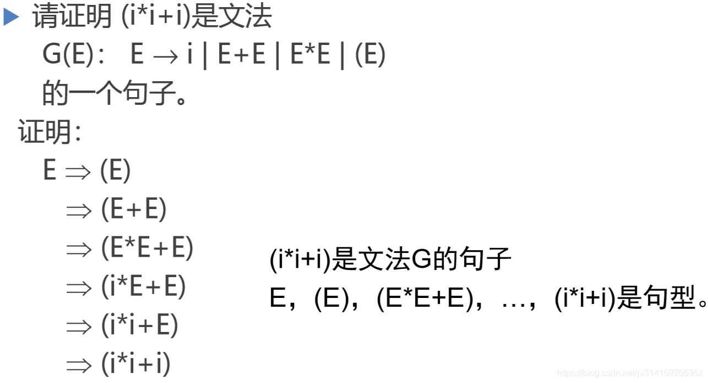从文法到语言
给定文法判断所产生的语言是什么，其实就是一个递归的思想：
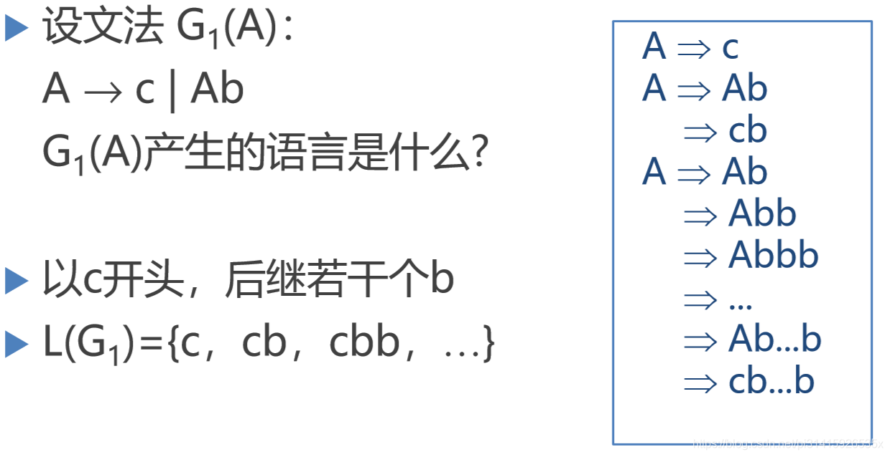 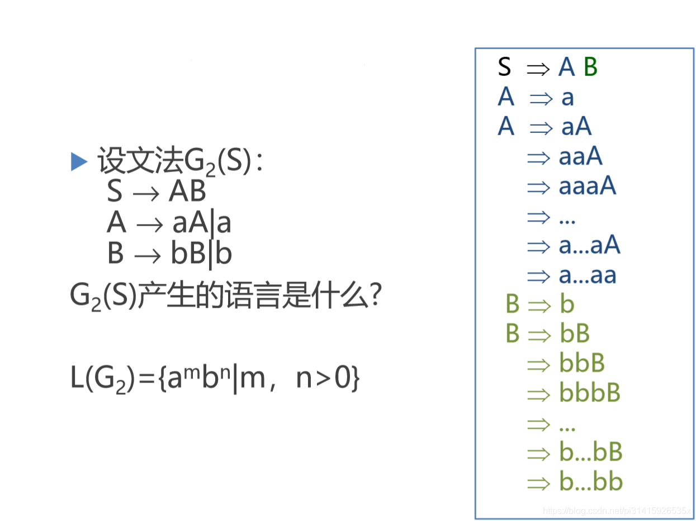从语言到文法
请给出产生语言为 { an bn ∣ n ≥ 1 } 的文法:
G 3 ( S ) ：
- S → a S b
- S → a b
3.3 语法树与二义性
推导与语法树
左推导和右推导
从一个句型到另一个句型的推导往往不唯一，从推导的方向看有两种：
- 最左推导：任何一步 α ⇒ β 都是对 α 中的中的 左非终结符 进行替换
- 最右推导 ( 规范推导 ) ：任何一步 α ⇒ β 都是对 α 中的中的右非终结符进行替换
语法树
- 用一张图表示一个句型的推导, 称为
语法树 - 一棵语法树是不同推导过程的共性抽象
注意：
- 树中间，父子结点
可以同名 - 语法树不反应结点的产生先后顺序，只反映语法符号的定义或者说是构成关系
二义性(ambiguity)
文法的二义性：如果一个 文法 存在 某个句子 对应 两棵不同的语法树 ，则说这个文法是二义的 G ( E ) ： E → i ∣ E + E ∣ E ∗ E ∣ ( E ) 是二义文法语言的二义性：一个语言是二义的，如果（那么） 对它不存在无二义的文法 。对于语言L，可能存在G和G’，使得 L ( G ) = L ( G ’ ) = L ，有可能其中一个文法为二义的， 另一个为无二义的
二义性问题是 不可判定问题 ，即不存在一个算法，它能在有限步骤内，确切地判定一个文法
对于是否是二义的 ，可以找到一组无二义文法的充分条件
3.4 形式语言鸟瞰
乔姆斯基于1956年建立形式语言体系，他把文 法分成四种类型：0，1，2，3型 。
- 0型(短语文法，图灵机)：产生式形如： α → β ，其中： α ∈ ( VT ∪ VN ) * 且 至少含有一个非终结符 ; β ∈ ( VT ∪ VN ) *
- 1型(上下文有关文法，线性界限自动机) ：产生式形如： α → β ，其中： ∣ α ∣ ≤ ∣ β ∣ ，仅 S → ε 例外
- 2型(上下文无关文法，非确定下推自动机) ： 产生式形如： A → β , 其中： A ∈ VN ； β ∈ ( VT ∪ VN ) * （可以利用栈分析）
- 3型(正规文法，有限自动机)： 产生式形如： A → αB 或 A → α （右线性文法）其中：α∈VT*；A，B∈VN ；（左线性文法：产生式形如： A → Bα 或 A → α ）
四种类型文法描述能力比较
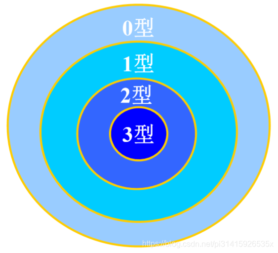上下文无关文法
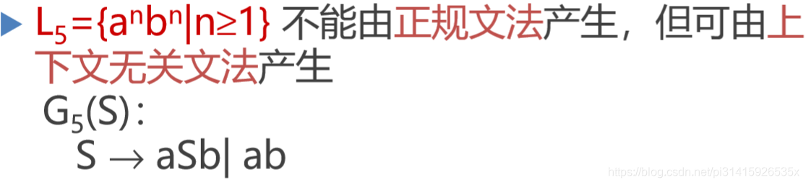（自嵌套语言仅能由上下文无关文法产生)
上下文有关文法
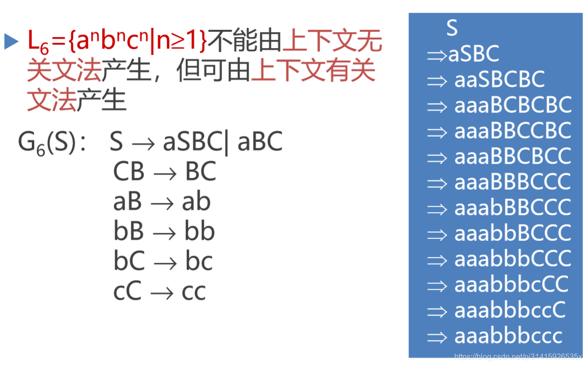0型语言
程序设计语言不是上下文无关语言，甚至不是上下文有关语言，只能由0型语言产生，如：
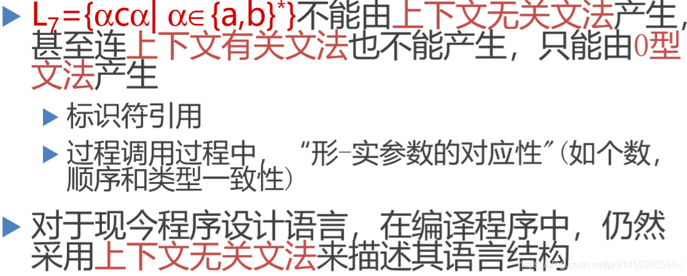对于无法利用上下文无关法分析的部分一般交由语义分析处理。
习题
课后习题，题干和过程引用网上的资料了
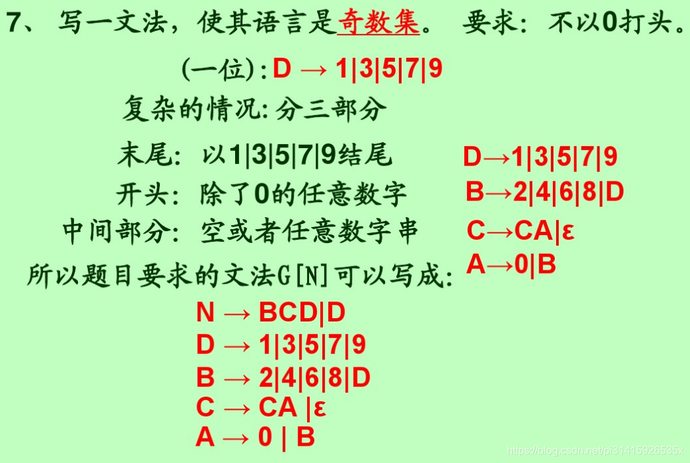 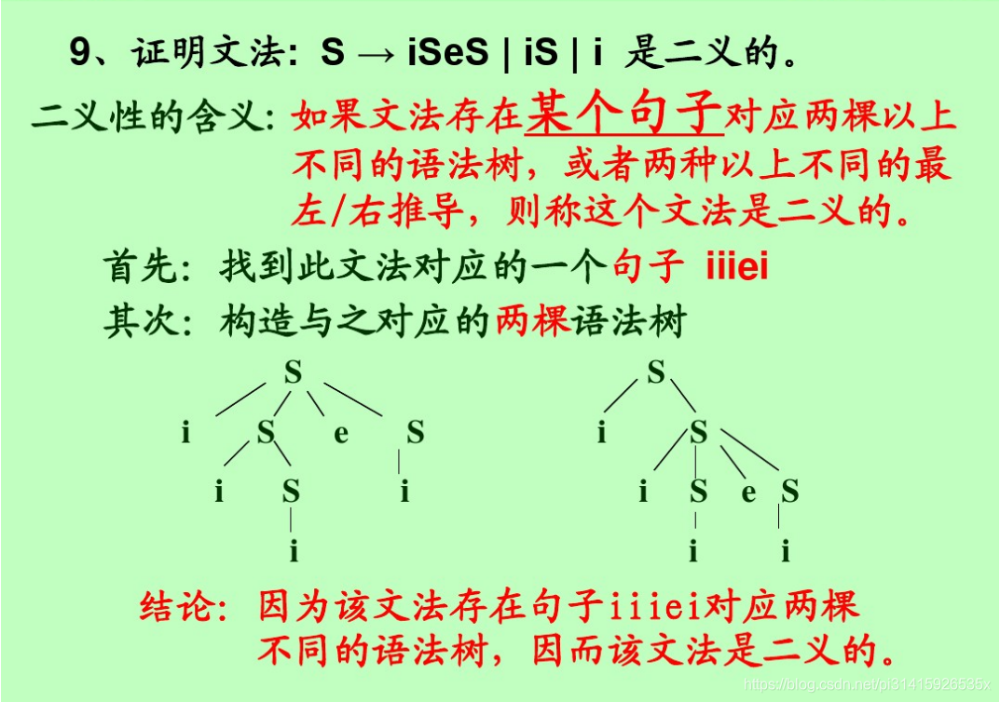 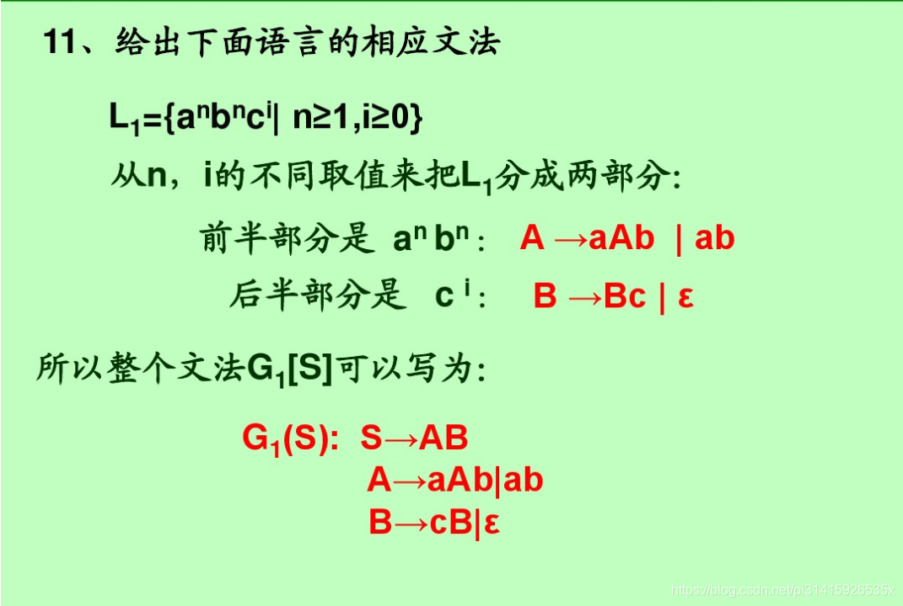 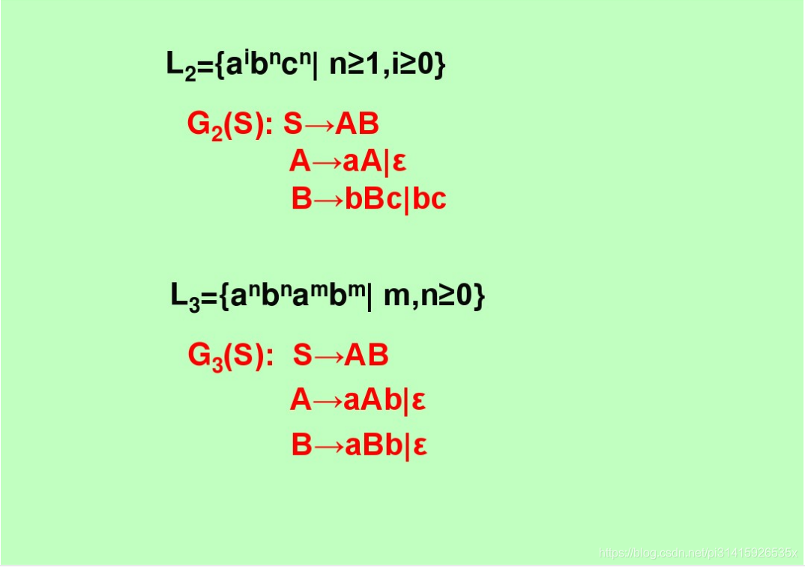 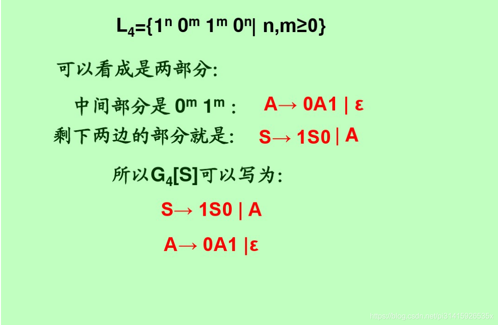（end)
参考
- 学习所用，转自CSDN pi31415926535x
- 《高级程序设计语言编译原理》